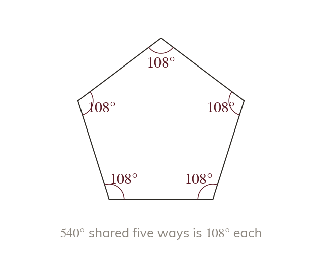

Interior angle of a regular polygon
In a regular polygon, every interior angle is equal. So each one is the total ÷ :
In a regular polygon, all interior angles are equal, and together they sum to (from yesterday). Since they are all equal, EACH interior angle is the total shared out ways: